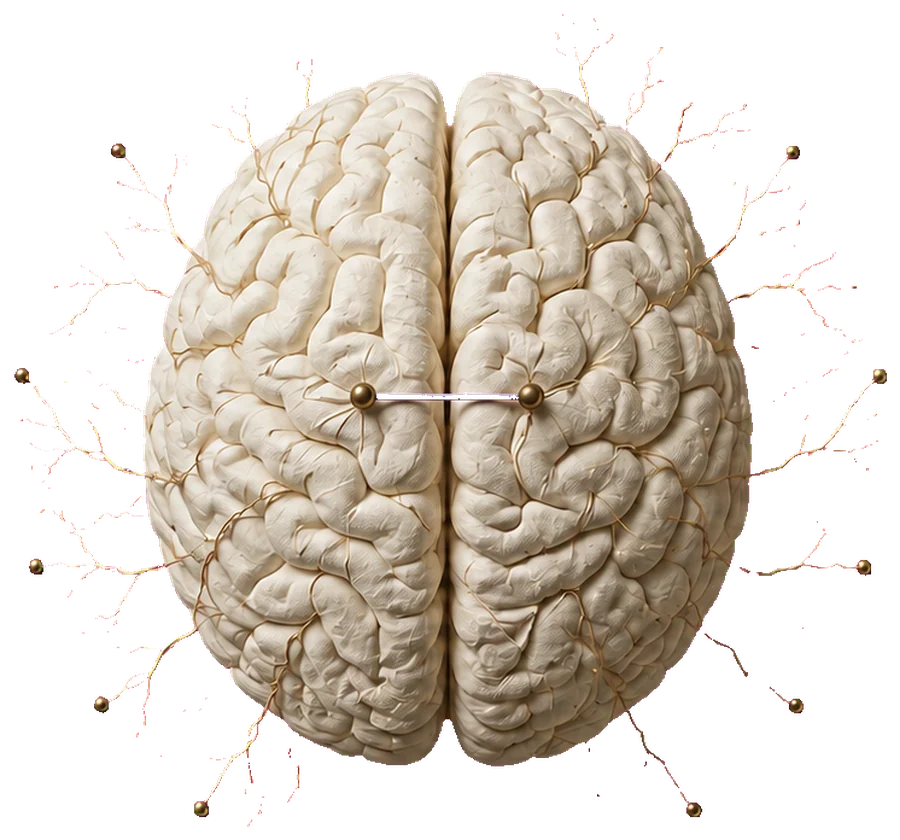
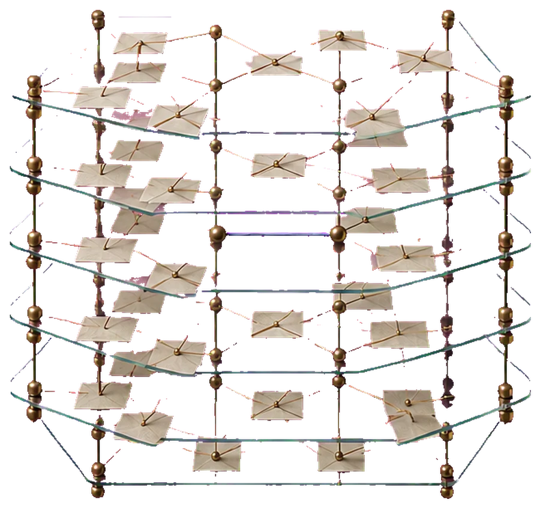
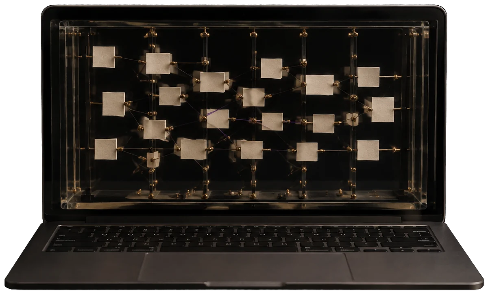

A field guide for curious students
Is it like your brain? Six plain questions about the machines that talk: how they learn, why some are free to download, and how to run one on your laptop.


Why this guide exists
You have probably used ChatGPT, Claude, or Gemini. Maybe today. These systems write essays, explain calculus, and debug code, yet almost nobody can say how they work or where they come from. This guide closes that gap by answering six plain questions, one per chapter, starting with the one everybody secretly asks: is there a little brain in there?
Here is the promise. By the end, you will understand the full life of a language model: how it learns from a huge slice of the internet, how companies teach it to be helpful instead of weird, what actually gets published when a model is "open," and how a sixteen-year-old with a decent laptop can run one at home for free. Every step uses ideas you already have. Guessing. Practicing. Getting graded. Getting better.
One warm-up fact before chapter one. A language model does exactly one thing: it predicts the next chunk of text. Here is one caught in the act.
This is the whole trick
The cat sat on the ?
Every bar shows how likely the model rates one possible next word. Something still has to pick one. The machine usually picks from near the top, with a little randomness thrown in, which is why the same question can get two different answers. That ranking is the whole of what the model computes at each step. Everything else in this guide is about how those guesses get good, and what happens to them afterward.
Chapter I · Prediction
When an AI writes you a poem or explains your homework, it is natural to picture a little electronic brain in there, thinking. So let's answer the question head on. A language model borrows exactly one idea from your brain, and differs from it in almost every other way. This chapter shows you what is actually inside.
Start small. Your phone's keyboard already does a tiny version of what ChatGPT does. Type "see you" and it suggests "later." A large language model is the same idea, enormously bigger. Your keyboard guesses from the last word or two. A model can look back over everything in front of it, thousands of words at a time, and it has read more text than any human ever will.
One correction to the demo above: the machine does not work in whole words. Before a model can read anything, text gets chopped into tokens: small chunks that are usually a word, part of a word, or a punctuation mark. Each token has an ID number, because computers work with numbers. The full list of tokens a model knows is called its vocabulary, usually 50,000 to 250,000 of them.
The model itself is one enormous math function. Token IDs go in, and out comes a score for every token in the vocabulary: how likely each one is to come next. Inside the function sit billions of adjustable numbers called weights (also called parameters). Think of them as billions of tiny dials. At the start they are random and the model outputs nonsense. Training is the process of turning those dials until the guesses get good.
The architecture, meaning the shape of the function, is called a transformer. It came from a 2017 paper called "Attention Is All You Need." The idea in the title, attention, works like this: as the model handles each token, it can look back at every earlier token and decide which ones matter right now. In "the cat sat on the," attention lets the model give "cat" extra weight when it guesses the next word. Nearly every model you have heard of, from GPT to Claude to Llama, is a stack of these attention layers, and that shared shape will matter a lot in chapter four. To learn how attention works in detail, this site has a whole piece on exactly that: Who Killed Aldous Finch?.
To generate a paragraph, the model just repeats the trick. Predict a token, add it to the text, predict the next one, again and again, dozens of times per second. Every essay an AI has ever written was produced one token at a time.
Here is the one idea the model genuinely borrows. Your brain is a web of roughly 86 billion neurons, each one doing a small job. Trillions of links join them, and the strength of those links changes as you learn. A language model is also a web of simple units joined by adjustable links. That is why the design is called a neural network, and why each dial is the strength of one connection. Learning by adjusting connection strengths: that is the borrowed idea, and it is a great one. It came from researchers who studied brains, and two of them, John Hopfield and Geoffrey Hinton, won the 2024 Nobel Prize in Physics for working it out decades before it paid off.
Past that one idea, the two stop resembling each other. Put them side by side and the differences are bigger than the similarity.
Before we watch a model learn, here is the most common misunderstanding about AI. Your brain updates itself constantly. You will remember something from today for years, without trying. A language model works on a completely different schedule: there is a training phase, when the dials move, and after it ends they are locked. Every conversation the model has afterward runs on the same frozen numbers.
This one fact explains a lot of everyday AI behavior. Ask a model about last week's news and it may have no idea, because its training ended months earlier. The industry calls that boundary the knowledge cutoff: the model knows the world up to the day its training data was collected, and nothing after. When an AI does know last week's news, it looked it up. The app searched the web and pasted the results into the conversation. The dials still know nothing after the cutoff. It also means that nothing you say changes the machine you are talking to. Your chat may still end up in the training data for a future one, but that is a later machine, not this one. Correct its mistake and it will apologize and adjust within that conversation, but the weights do not budge. Start a fresh chat and the same frozen model greets you. If it seems to remember you, the app saved notes and handed them back to it as text. The model itself kept nothing. Any "learning" between then and now happened back at the lab, in the phase the next chapter is about.
So, is it a brain? Verdict: it is a machine built on one great idea from the brain, running on a completely different schedule, with no body, no life outside the text it is given, and no memory of its own. Keep both halves of that answer in mind. The borrowed idea explains why it is so capable. The differences explain almost everything odd about it.
Chapter II · Training
Training happens in two big phases, and the second one splits in two. First the model reads a giant chunk of the internet and picks up how language works, along with most of what the writing was about. Then it gets coached, the way an athlete gets coached, into being a useful assistant. The industry calls the phases pre-training and post-training. Post-training is where the two coaching steps live.
Pre-training is a loop, run trillions of times. Show the model a snippet of real text with the ending hidden. Let it guess the next token. Compare the guess to the real answer. Nudge every weight a tiny amount, so that next time the right answer comes out a little more likely. Repeat with the next snippet.
How does it know which way to turn billions of dials? Because the whole thing is arithmetic. The error can be traced back through the math, dial by dial, and each one gets told which way it should have leaned.
The scale is hard to picture. Llama 3 was pre-trained on about 15 trillion tokens, roughly 11 trillion words, or more than a hundred million books. Where does that much text come from? Mostly from crawling the public web, the same way a search engine does, plus books, Wikipedia, scientific papers, and huge amounts of computer code, all filtered to strip out spam, duplicates, and junk. Choosing and cleaning that mountain of text is a craft of its own, because whatever goes in shapes everything that comes out.
Then comes the hardware. The job runs on thousands of specialized chips called GPUs, each costing about as much as a car. Meta trained its biggest Llama 3 on 16,384 of them at once, running for months and drawing enough electricity to power a small town. Sam Altman has said GPT-4 cost more than 100 million dollars to train. Most of what it costs to build one of these gets spent right here, which is why only a handful of organizations on Earth build the biggest ones from scratch.
Something remarkable happens along the way. The only way to keep getting better at guessing the next word is to pick up what the words are about. Predicting the end of "the capital of France is" requires knowing it is Paris. Predicting the next line of a Python program requires learning Python. Nobody programs these facts in. They get soaked up because knowing them makes the guesses better. Researchers track progress with one number: how wrong the guesses are, on average. They call it the loss, and they watch it fall.
The result is called a base model, and here is the catch: all it does is keep text going, like a supercharged autocomplete. It has read more text than any human ever will, and it has never once had a conversation. Ask it a question and it may respond with three more questions, because on the internet, questions often appear in lists next to other questions. It imitates text. It does not yet help you.
Post-training turns the continuer into an assistant. Watch one question travel through the stages. The question: A train leaves at 3:40 pm and the ride takes 85 minutes. When does it arrive?
"When does it arrive? How long is the ride? Is there a dining car? Practice problems, page 74."
It continues the text like a workbook page. Fluent English, and no use at all.
"The train arrives at around 5 pm. Let me know if you'd like help with a similar problem!"
It now answers like an assistant. Friendly, confident, and wrong. 3:40 plus 85 minutes is 5:05.
"85 minutes is 1 hour 25 minutes. 3:40 + 1:00 = 4:40, then + 0:25 = 5:05 pm."
It works step by step and lands on the right answer, because right answers were rewarded.
First, people show it what a good answer looks like. The industry calls that supervised fine-tuning, or SFT. They write out thousands of example conversations showing the ideal behavior: a question, then a helpful, honest, well-organized answer. It trains on these the same way it trained on internet text, and it picks up the shape of an assistant's reply. Tone, structure, "here's how I can help." What SFT cannot easily teach is judgment, because you cannot write an example for every situation.
Judgment comes from practice with a coach, not from studying worked examples. The industry calls that reinforcement learning, or RL. It writes answers, something scores them, and the weights get nudged to make the high-scoring kind more likely next time. The interesting part is who does the scoring, and there are three answers. They are not rivals. A modern assistant is trained with all three, each on the kind of question it suits.
The model writes two answers to the same question. A person picks the better one. Do this tens of thousands of times and you can train a second model, called a reward model, that learns to predict which answers people prefer. Now the main model can practice against the reward model millions of times, far more than humans could ever judge directly. OpenAI's 2022 work on this is what turned GPT-3 into ChatGPT, and it is a big reason the chatbots you use feel polite and clear.
Human judging is slow and expensive, so labs found a shortcut: let a capable AI model do the judging, guided by a written list of principles. Anthropic calls its version Constitutional AI: the judge checks each answer against that written list, with rules like "choose the response that is more honest" and "avoid helping with anything dangerous." The loop is the same as with human feedback, with the human swapped out, so it can run millions of times for a fraction of the cost. Most modern assistants are shaped by a blend of human and AI feedback.
Here is the newest idea, and it is behind the "reasoning" models that appeared around 2024 and 2025. For some questions, taste does not matter because the answer can be checked. A math problem has one correct number. Code either passes its tests or fails. So: give it a hard problem, let it try many long step-by-step solutions, check automatically which ones reach the right answer, and reward those. This is called reinforcement learning with verifiable rewards. It has one hard limit. It only works where an answer can be checked by machine, which rules out most of what people actually ask: write this email, is this argument fair, explain this to my mother.
Something surprising falls out of this. Nobody tells it to show its working. But when only correct final answers earn a reward, longer working turns out to pay, so more of it appears: try an approach, notice a mistake, back up, check the answer. DeepSeek published R1 openly in January 2025, and everyone could see it work. The major labs now train their reasoning models this way, on math and code.
Training also explains the most famous AI flaw. Ask a model for a book that does not exist and it may hand you a title, an author, and a publication year, invented on the spot with total confidence. The industry calls this hallucination, and now you can see where it comes from. Underneath, the machine is still guessing the next token. A smooth, plausible guess scores well whether or not there was anything true to say. Post-training pushes hard against this. It is harder than it sounds, because nothing inside marks the difference between a fact it absorbed and a guess it assembled. Both come out the same way, in the same confident voice. Models practice saying "I'm not sure," and answers get graded on honesty as well as helpfulness. The same phase teaches safety: refusing to help with dangerous requests is a trained behavior, shaped by thousands of graded examples, exactly like everything else in this chapter. The guessing never fully goes away, though, which is why you should treat a model's confident claims the way you treat a smart friend's: usually right, worth checking when it matters.
Put the phases together and the whole recipe fits in one picture: read everything, study good examples, then practice against a scorer.
Chapter III · The release
All that training boils down to one thing: the final settings of those billions of dials. A file of numbers. When a lab publishes that file for anyone to download, the model is called open weights. Meta's Llama, Mistral's models, DeepSeek's models, and Alibaba's Qwen all work this way. OpenAI, Anthropic, and Google keep the weights of their best models private and sell access instead. This chapter is about the open path: how it works, and why a company would give away something that cost a hundred million dollars to make.
Here is the puzzle. When Meta releases a new Llama, dozens of companies are running it within hours. None of them trained it. So how can a stranger take a mystery file of numbers and bring it to life? Wouldn't they need to know how it was built and trained?
The answer comes in two parts. Part one: a release is a package with everything a stranger needs. Four things come in it.
The config is a small file that describes the model's shape: how many layers it has, how big each layer is, and which design it follows. It is the blueprint that tells software how to arrange the numbers. The tokenizer is the exact text chopper from chapter one, and it has to match perfectly. Chop the text even slightly differently and the wrong numbers go in, so garbage comes out. The reference code is working code the lab publishes, so nobody has to guess how any new part is meant to run. And the weights come in a standard file format called safetensors, which labels each group of numbers so the software knows what it is and where it belongs.
Part two of the answer: the training history does not matter for running the model. Everything the training accomplished, all those months and millions of dollars, lives inside the final numbers. Think of a chess player who studied for twenty years. To play her, you do not need her study notes. Her skill shows up in her moves. Same here: to run a model you need the weights, the config, and the tokenizer, and the story of how the weights got their values is already inside the numbers.
One more helpful fact makes the whole system click. Remember from chapter one that nearly every model is a transformer. The differences between a Llama, a Qwen, and a Mistral are small variations on one shared design, like different car models sharing the same kind of engine. So software written to run transformers can run almost any new model, just by reading its config. When a lab does invent a genuinely new part, it publishes the code for that part with the release.
Giving away a hundred-million-dollar model sounds like burning money. It is not. It is a strategy, and it has worked before. In the 1990s and 2000s, volunteers and companies together built free software like Linux out in the open. Today it runs most of the internet and every Android phone. The AI labs releasing open weights are betting on the same effect.
The bet has four parts. A free model gets used by millions of developers, who find its flaws, build tools around it, and make the next version better. No company could hire a workforce that size. It makes the lab's model the one that startups and universities build on, which pays off later in influence and in paid services. It attracts researchers, who want their work in the world rather than locked in a vault. And some labs simply believe powerful technology gets safer when many people can inspect it, not just a few. Most open releases come with a license letting anyone use them, even to build a business, and that license file sits right next to the weights in the package. Read it: a few licenses put conditions on very large companies.
Notice that both sides chose their path on purpose. Meta gives Llama away to make its own products stronger, and to stop a rival from owning the model everyone builds on. OpenAI and Anthropic sell access to fund the enormous cost of the next model. Both strategies are succeeding at the same time, which is why you can download some of the world's best models for free while others sit behind a subscription. Either way, a downloaded file of weights just sits there until software brings it to life. That software is the next chapter.
Chapter IV · Inference
Using a trained model is called inference: tokens in, predictions out, no more learning. The weights are frozen. The interesting part is the free software that does the running, called inference engines, and the story of who built it.
First, feel what inference is. When you press enter on a message, your words get chopped into tokens, the engine pushes those numbers through every layer of the network, and out comes one predicted token. Then it does the whole thing again for the next token, and again, often 50 or more times per second. That is why the reply appears word by word on your screen instead of all at once: you are watching each prediction arrive.

No single company controls this software. The pieces came from universities, lone programmers, and chip companies, and all of it is free to use, even commercially. Running a model on your own computer, instead of sending your words to a company's servers, is called running it locally. The whole pipeline, from a lab's release to a model running on a laptop, looks like this.
Three of these are worth knowing, because they show who actually builds the software behind AI. vLLM came out of a research lab at UC Berkeley and became the standard engine that companies use to serve open models to millions of users. llama.cpp began in 2023, when a programmer named Georgi Gerganov set out to make Llama run on his MacBook, alone, in his spare time. His code now runs underneath most home AI software, including Ollama and LM Studio, the friendly apps most people use to run models on their own computers. The Hugging Face Hub is the website where nearly every open model gets published, a public library anyone can download from. It now holds more than two million, including versions tuned for everything from law to chemistry to Minecraft. Today one student with a laptop can download the same weights a billion-dollar company runs for its customers.
There is one problem with running a big model at home. Each weight is normally stored as a 16-bit number. A bit is the smallest piece of storage a computer has, and 16 bits is two bytes, so a 70-billion-weight model needs about 140 gigabytes, far beyond a normal laptop. Memory here means the computer's working memory, the space it uses while running, not hard drive space. The whole model has to sit in there at once. The fix is quantization: store each weight with fewer bits, the way a compressed photo uses less space than the original. Squeeze each weight down to 4 bits, a quarter of the size, and that model fits in about 35 gigabytes. Smaller models shrink to a few gigabytes, which a normal computer handles fine. The answers get slightly worse. For almost everything people do at home, it is a good trade. Anyone can do the squeezing, since the release documents exactly how the original numbers are stored.
The closed labs took a different road entirely. Their designs are secret, so the public engines could not run them even if someone had the weights. The scale is staggering too: OpenAI reported 900 million people using ChatGPT every week in early 2026. At that size it pays to build custom software tuned to their exact chips. So OpenAI, Anthropic, and Google each build their own private software for running their models, and the only things that ever leave the building are the answers. For a user, that is the whole practical difference. An open model you can download, keep, and run with the machine unplugged from the internet. A closed one you can only visit, which means the words you send it leave your computer.
The two worlds trade ideas constantly. Speed tricks invented for the open engines get rebuilt inside the private systems, and research from the closed labs shows up in open code. Sometimes a closed lab publishes an open model, and it then travels the same path as every other one: onto the Hub, then into the engines. The walls are real, and ideas jump over them all the time.
Chapter V · The bigger picture
Language models are one branch of a much bigger family. Zoom out and you find the same basic recipe, dials plus practice, solving problems that look nothing like writing. The variety comes from one choice: what the model practices on.
Start with the names, because they get thrown around loosely. Artificial intelligence is the broad goal of getting computers to do things that would count as intelligent if a person did them. Machine learning is one approach to that goal: instead of a programmer writing the rules by hand, the computer works them out from examples. Deep learning is the kind of machine learning that took over the field around 2012, using neural networks with many layers of those adjustable dials. Language models sit in that innermost box, next to some very different cousins.
In 2017, DeepMind built AlphaZero. It was told the rules of chess and nothing else: no famous games, no memorized openings, no advice from grandmasters. It then played against itself, millions of times, starting from random flailing. Win, and the moves that led there got rewarded. Lose, and they got discouraged. That is reinforcement learning, the same idea from chapter two, with the game's result as the answer key.
After nine hours of self-play it was beating the strongest existing chess program. And it played strangely, sacrificing pieces in ways human theory called wrong, because it had never read human theory. It had learned chess from scratch, and some of its ideas have since changed how top humans play. Notice what is different from a language model: no internet text, no human examples, no next-token prediction. Just dials, a scoreboard, and enormous practice.
Now the big one. Proteins are the machines that run your body, and each starts as a long chain of chemical beads that folds into a specific three-dimensional shape. Shape determines what the protein does, so knowing the shape matters enormously for understanding disease and designing medicine. The trouble is that the chain can fold in an astronomical number of ways. For fifty years, working out a single protein's shape meant years of lab work with expensive equipment. Biologists called it the protein folding problem, and it was one of the great unsolved puzzles in science.
DeepMind's AlphaFold attacked it with deep learning. Feed in the chain of beads, predict the folded shape, compare against the roughly 170,000 structures biologists had already worked out in labs, and nudge the dials. By 2020 it was predicting shapes for most proteins about as accurately as the lab methods, and the puzzle was largely considered solved. DeepMind then released predicted structures for over 200 million proteins, nearly every one known to science, free for any researcher on Earth. Work that would have taken years now takes minutes.
In October 2024, Demis Hassabis and John Jumper of DeepMind shared the Nobel Prize in Chemistry for this work, alongside David Baker for protein design. A Nobel in chemistry, awarded partly for a piece of software. Add the physics prize from chapter one, for the neural network idea itself, and 2024 becomes the year the Nobel committees said, twice, that this recipe changed science.
Other members of the family follow the same pattern with different practice tasks. Image generators learn by taking clean pictures, adding visual noise until nothing is recognizable, then practicing the reverse until they can build a picture out of pure noise. Speech recognizers practice on audio paired with transcripts. Weather models like DeepMind's GraphCast practice on decades of past weather to forecast the next ten days. One forecast takes about a minute on a single computer, while traditional forecasting needs hours on a supercomputer. Self-driving systems practice on video paired with the steering a human chose.
So language models are not the whole of AI, and they may not even be the part that matters most to science. They are the branch that happens to speak, which is why they became the public face of a much wider effort.
Chapter VI · Your move
You now know the whole arc: predict the next token, train on the internet, coach with feedback and answer keys, freeze the weights, package them, run them anywhere. And you know where all of it sits, in a family of models that also fold proteins and play chess. The best part is that "anywhere" includes your own computer, today, for free.
The easiest start is Ollama (ollama.com) or LM Studio (lmstudio.ai). Install one, then pick a small model. Sizes are written into the names: a 3B or 7B model means 3 or 7 billion weights, which is the range that runs comfortably on a normal computer. The download is a few gigabytes, and within minutes you will have an AI running fully offline on your machine. Then browse huggingface.co and see the millions of open models people have published, including ones fine-tuned for music theory, medicine, and ancient Greek.
Everything in this guide is checkable, so check it. First, ask any chatbot to count the letter r in "strawberry." Many have stumbled on this, and now you know the reason: what goes in is tokens, whole chunks like straw and berry, not a row of letters. Counting letters is something the machine has to work out indirectly, which is why it slips. Second, ask about something that happened this week. If the app has a web search button, switch it off first, or ask your offline local model instead, which cannot look anything up. Whatever comes back is the knowledge cutoff from chapter one, in front of you. Third, open Task Manager on Windows, or Activity Monitor on a Mac, and watch the memory number. Now ask your local model a question. Memory jumps by several gigabytes and stays there: that is the weights file, loaded and frozen, sitting in memory for as long as the model is running.
Where to go next
When you want the deeper story, these free resources are famous for a reason. Andrej Karpathy's YouTube series "Neural Networks: Zero to Hero" builds a small language model from scratch, line by line, and his video "Deep Dive into LLMs", meaning large language models, walks through everything in chapter two in detail. The channel 3Blue1Brown has a visual series on neural networks, and its video on transformers makes attention feel obvious. For the chapter five material, DeepMind's own documentary on AlphaFold is on YouTube for free, and alphafold.ebi.ac.uk lets you search a protein by name, hemoglobin or insulin for a start, and spin its predicted shape around in your browser. A motivated high school student can follow all of it, and plenty have.
Two more doors on this site. Who Killed Aldous Finch? tells the attention idea from chapter one as a murder mystery. It takes an evening to read, and by the end you will understand attention better than any paragraph could teach it. And once you know how these minds work, Can Artificial Minds Feel? asks the question this guide left alone: whether there is any experience inside, whether these minds can feel anything, and whether anyone can tell. It is a question about machine consciousness.
And if any of this made you want to build rather than just use, that instinct is worth trusting. llama.cpp started as one person's spare-time curiosity. The field is young enough that the textbooks are still being written, some of them by people who first met these ideas in a guide like this one.